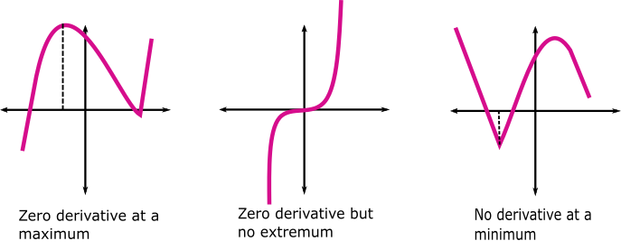
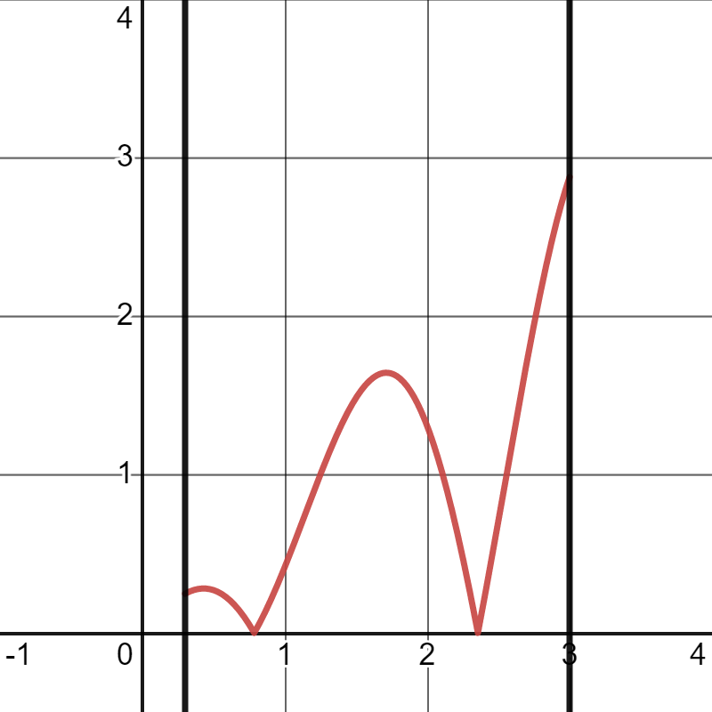
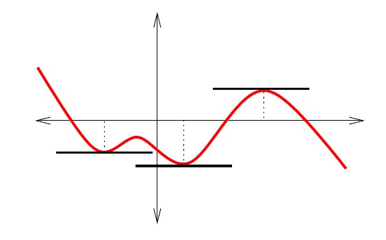

Applications of the derivative
Contents
3.4. Applications of the derivative#
3.4.1. Local and strict extremum#
Suppose an open interval, \(A \subset \mathbb{R}\), and an application \(f : A \longrightarrow \mathbb{R}\).
Definition
We say that \(f\) has a relative maximum at \(a \in A\) if and only if there exists \(h > 0\) such that:
Similarly, we say that has a relative minimum at if and only if there exists such that:
By relative extremum we mean, indistinctly, a relative maximum or minimum1.
We will define, next, critical point (or stationary point) and, then, we will study the relation between relative extrema and critical points.
Definition
If at a point \(a\) we have \(f'(a) = 0\), we say that \(a\) is a critical point (or stationary) of the function \(f\).
Regarding the relation between critical points and relative extrema (which tend to be confused… but they are not the same), first of all, we have to highlight that a relative extremum can be a point where there is no derivative (and, therefore, it will not be a critical point). The most classic example is the absolute value function. If you remember its graph, you will easily see that this function has a relative minimum at \(x=0\)… but at that point the absolute value function is not differentiable!
To cover this first possibility we will see the first criterion to locate relative extrema. It is usually known by the criterion of the first derivative and, if you read it carefully, you will see that we ask that the function be differentiable near the point in question, but not necessarily at it (that is, it would be valid for the absolute value function at \(x_{0}=0\)):
Property (Criterion of the first derivative)
Let \(f:[a,b] \longrightarrow \mathbb{R}\) be a continous function, \(x_0 \in (a,b)\) and let \(r > 0\) be such that \(f\) is differentiable in \((x_0-r,x_0) \cup (x_0,x_0+r)\). Then
If \(f'(x)<0\), \(\forall x\in (x_0-r,x_0)\) and \(f'(x)>0\), \(\forall x\in (x_0,x_0+r)\), then \(f\) has a relative minimum at \(x_0\).
If \(f'(x)>0\), \(\forall x\in (x_0-r,x_0)\) and \(f'(x)<0\), \(\forall x\in (x_0,x_0+r)\), then \(f\) has a relative maximum at \(x_0\).
But, what happens if the function is differentiable at a relative extremum? In this case, we have the following theorem:
Theorem
If has a relative extremum at the point \(a \in A\) and \(f\) is differentiable at that point, then \(f'(a)=0\).
Notice well that the previous condition is necessary, but not sufficient: the function can have zero derivative at a point, but not have an extremum there. That is, for differentiable functions, relative extremum \(\Rightarrow\) critical point, but critical point \(\not\Rightarrow\) relative extremum.
For example, the function \(f(x)=x^3\) verifies \(f′(0)=0\), but it is not a maximum or a minimum. We try to illustrate this strange relation in the following figure: 
{kind=link}
So, summarizing what we have just seen, when we are interested in locating the relative extrema of a function in a certain interval (open), the first thing we will do is to look for its critical points (that is, to look for the \(x\) such that \(f'(x)=0\)) and, then, to apply some of the criteria for the identification of relative extrema. We have already seen the one of the first derivative, let’s see now the most used one:
Property (Criterion of the second derivative)
Let \(f: (a,b) \longrightarrow \mathbb{R}\) be a function with second derivative continuous in \((a,b)\). Let \(x_0 \in (a,b)\) such that \(f'(x_0) = 0\). Then:
if \(f''(x_0) < 0\), \(f\) has a relative maximum at \(x_0\),
if \(f''(x_0) > 0\), \(f\) has a relative minimum at \(x_0\).
And what if we cannot apply the previous property? That is, if we have found a point \(x_{0}\) such that \(f'(x_{0})=0\) and \(f''(x_{0})=0\), what do we do? Then we use the following criterion:
Property (Criterion of the n-th derivative)
Let \(f \in \mathcal{C}^{n} (a,b)\) for some \(n \geq 1\). Let \(x_0 \in (a,b)\) such that \(f'(x_0) = f''(x_0) = \ldots = f^{(n-1)}(x_0) = 0\) and \(f^{(n)}(x_0) \neq 0\). Then
If \(n\) is even and \(f^{(n)}(x_0)<0\), \(f\) has a relative maximum at \(x_0\).
If \(n\) is even and \(f^{(n)}(x_0)>0\), \(f\) has a relative minimum at \(x_0\).
If \(n\) is odd, \(f\) does not have a relative extremum at \(x_0\).
Definition
The supremum and infimum of \(f\) in \(A\) are respectively referred to as the quantities:
that is, the supremum and infimum of the image set \(f(A)\). When the supremum or infimum of f in A exist and belong to \(f(A)\), they are called the absolute maximum and absolute minimum of \(f\) in \(A\), respectively. The absolute maximum and minimum are globally referred to as absolute extremes.
So, to find the absolute extremes (maximum and minimum) of a function on a closed interval \([a,b]\), we should study:
the stationary points of \(f\) in \((a,b)\), that is, the points \(x\in(a,b)\) such that f is differentiable and \(f'(x)=0\),
the points where \(f\) is not differentiable,
the endpoints (\(a\) and \(b\)) of the interval.
In the following figure, we show an example of a continuous function on a closed and bounded interval, for which the absolute minimum is found at the two points where the function is not differentiable (same value at both points), while the absolute maximum is at the right endpoint of the interval (although it could have been at the critical point we see for \(x=2\pi\)).
{kind=link}
You are already familiar, from BAC, with problems where you have to find the absolute maximum and minimum of a continuous function on a certain closed and bounded interval. They are often disguised with more or less imaginative text (We cut a square sheet of cardboard so that […]). Here are 10 examples (of different types) for you to practice: https://existelimite.blogspot.com/search/label/Máximos y mínimos.
3.4.2. Extremes: Complete exercise with Sympy#
Let’s look at a typical exercise for calculating the maximum and minimum. Given a trapezoidal section channel with side 2, calculate the angle \(\alpha\) (see drawing) that maximizes the area of the channel section.

By hand. Obtain the function that provides the area of the channel as a function of the angle α
Symbolically: with
Sympy.Numerically using the Newton method with an error less than \(10^{−4}\).
import sympy as sp
# 2. We solve the problem by using Sympy
x,xn=sp.symbols('x,xn')
# Function that describes the area of the section as a function of the angle
f=4*sp.sin(x)*(1+sp.cos(x))
d1f=sp.diff(f,x)
d1fn=sp.lambdify(x,d1f)
alphamax=sp.solve(d1f)
print('The maximum section is reached with angle: ',float(alphamax[1]))
The maximum section is reached with angle: 1.0471975511965979
# 3. We approximate the maximum with Newton's method
import numpy as np
maxit=100
eps=1e-4
d2f=sp.diff(d1f,x)
d2fn=sp.lambdify(x,d2f)
xn=np.pi/2
for i in range(0,maxit):
res=d1fn(xn)/d2fn(xn)
xn=xn-res
if (np.abs(res)<eps):
break
print('Number of iterations performed: ',i)
print('Angle approximation for maximum section with NR: ',xn)
Number of iterations performed: 4
Angle approximation for maximum section with NR: 1.0471975511965559
3.4.3. Rolle and Lagrange theorems#
Theorem (Theorem of Rolle)
Let there be a function \(f:[a,b] \longrightarrow \mathbb{R}\), continuous on \([a,b]\) and differentiable on \((a,b)\). If \(f(a)=f(b)\), then there exists a point \(\xi \in (a,b)\) such that:
{kind=link}
We must make some comments on this theorem.
Remark
The theorem tells us that there exists a root of \(f'\). There may be more than one. We do not speak of uniqueness.
If \(f\) meets the hypotheses of the theorem and has \(n\) real roots, \(f'\) will have at least \(n−1\) real roots.
This fact is illustrated in the following figure. According to Rolle’s theorem, between two roots of \(f\) (i.e., two points where \(f\) equals \(0\)) there must be at least one root of \(f'\).
Conversely, if \(f'\) has \(n\) real roots, \(f\) will have at most \(n+1\) real roots.
{kind=link}
Next, we are going to see an exercise that shows a typical application of Rolle’s theorem: proving the uniqueness of a root.
Example
Prove that the equation
has exactly one root in \([0,\pi]\).
Solution:
Firstly, we are going to rewrite our problem as the calculation of the roots of a function. We just need to realize that the equation given to us can be written as
and therefore, it is the same as finding the roots of the function
We are going to prove that this function has a root in \([0,\pi]\) (using Bolzano’s theorem), and then, that this root is unique, with Rolle’s theorem.
Existence
Uniqueness
To prove uniqueness we will reason by contradiction. According to Rolle’s theorem, if \(f\) had two roots in \([0,\pi]\), there would be some point between them (therefore in \((0,\pi)\)) at which \(f'\) would be nullified. Let’s see that this is not possible. Differentiating,
As
then
which contradicts the existence of a point at which \(f'\) is nullified. Therefore, it is impossible for there to be two distinct roots of \(f\) in \([0,\pi]\).
Theorem (Lagrange mean value theorem)
Let there be a function \(f : [a,b] \longrightarrow \mathbb{R}\), continuous on \([a,b]\) and differentiable on \((a,b)\). Then, there exists a point \(\xi \in (a,b)\) such that:
{kind=link}
Just remember that \(\displaystyle\frac{f(b) - f(a)}{b-a}\) is the slope of the secant line to \(f\) through \(a\) and \(b\) to have the geometric interpretation of this theorem, which we show in the previous image: there exists a point \(x_0\in(a,b)\) such that the tangent line to \(f\) at that point is parallel to the secant line.
As an immediate consequence of the previous theorem, we have the following property:
Property
Let \(f\) be a real function differentiable in \((a,b)\).
If \(f' (x) \geq 0\), \(\forall x \in (a,b)\), then \(f\) is monotonically increasing.
If \(f' (x) \leq 0\), \(\forall x \in (a,b)\), then \(f\) is monotonically decreasing.
If \(f' (x) = 0\), \(\forall x \in (a,b)\), then \(f\) is constant.
If \(f' (x) \neq 0\), \(\forall x \in (a,b)\), then \(f\) is injective.
The deduction of this result is straightforward. Let’s think, for example, about the first point of the property. If \(f'(x) \geq 0\), \(\forall x \in (a,b)\), applying the result of Lagrange’s Theorem, it follows that \(f(b)-f(a)>0\), or, in other words, \(f(b)>f(a)\). That is, \(f\) would be increasing with respect to points \(a\) and \(b\). Applying the theorem in subintervals, we easily arrive at the result.